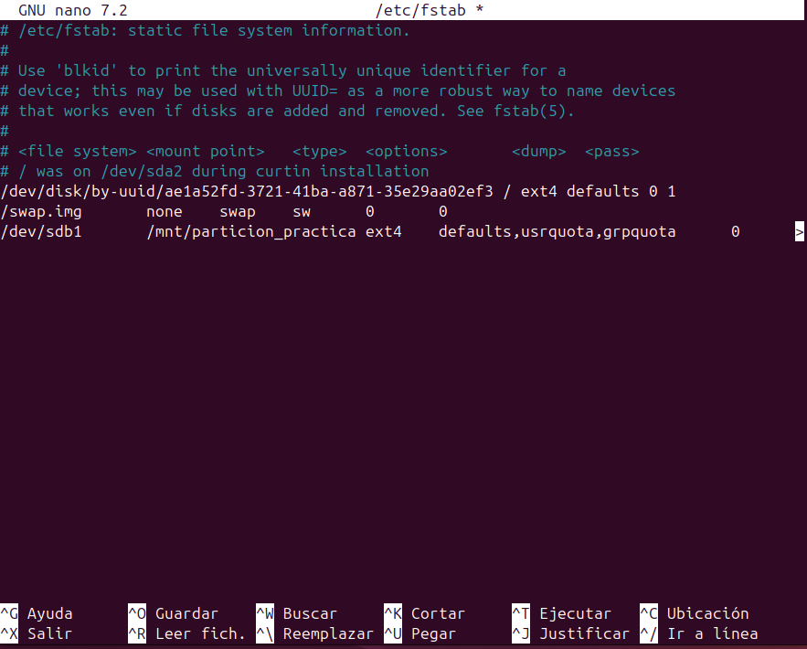
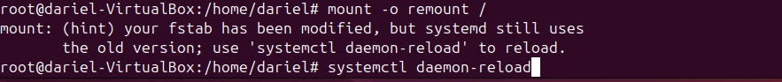
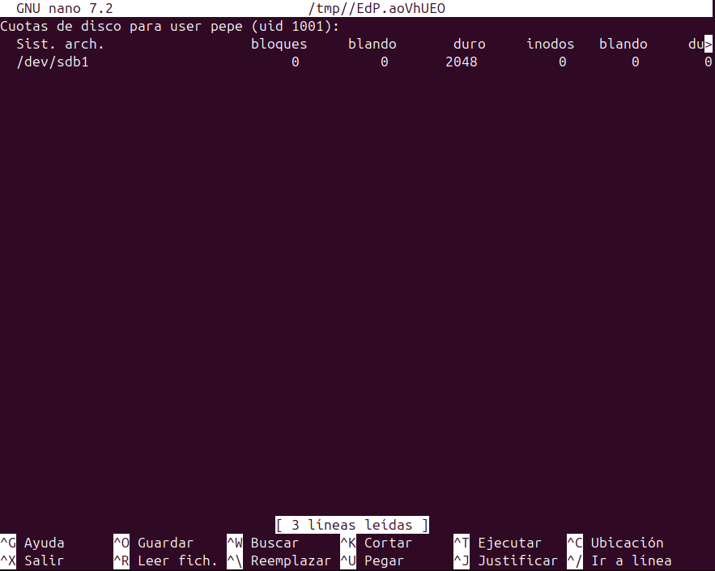
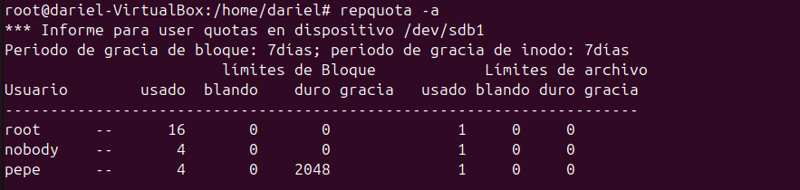

Cuotas de Disco en Ubuntu
¿Qué son las cuotas de disco?
Las cuotas de disco son una característica del sistema operativo que permite limitar la cantidad de espacio en disco que un usuario o grupo puede utilizar. Esto es especialmente útil en entornos multiusuario donde es necesario gestionar y controlar el uso del espacio en disco para evitar que un solo usuario consuma todos los recursos disponibles.
¿Para qué sirven las cuotas de disco?
Las cuotas de disco sirven para:
- Prevenir el uso excesivo de espacio en disco: Ayudan a evitar que un usuario o grupo utilice más espacio del asignado, garantizando que haya suficiente espacio para otros usuarios y aplicaciones.
- Gestionar recursos de manera eficiente: Permiten a los administradores del sistema asignar y controlar el uso del espacio en disco de manera más eficiente.
- Mantener el rendimiento del sistema: Al limitar el uso del espacio en disco, se puede mantener un rendimiento óptimo del sistema y evitar problemas relacionados con la falta de espacio.
Como configurar las cuotas de disco
Instalar los paquetes necesarios
Para habilitar y gestionar las cuotas de disco en Ubuntu, primero es necesario instalar los paquetes quota y quotatool. Puedes hacerlo ejecutando el siguiente comando:
sudo apt-get install quota quotatool
Crear y montar una partición en /mnt
Reutilizaré la particion creada en anteriores apartados. Resumen:
-
Crear una partición:
bash sudo fdisk /dev/sdX- Dentro de
fdisk, usanpara nueva partición,ppara primaria, selecciona el número de partición, define el tamaño y usawpara escribir los cambios.
- Dentro de
-
Formatear la partición:
bash sudo mkfs.ext4 /dev/sdX1 -
Crear un punto de montaje:
bash sudo mkdir -p /mnt/mi_particion -
Montar la partición:
bash sudo mount /dev/sdX1 /mnt/mi_particion -
Actualizar
/etc/fstabpara montaje automático:plaintext /dev/sdX1 /mnt/mi_particion ext4 defaults 0 2
Este comando muestra un resumen de las cuotas de disco para todos los sistemas de archivos con cuotas habilitadas, incluyendo el uso actual y los límites establecidos para cada usuario y grupo.
Habilitar las cuotas en el sistema de archivos
Edita el archivo /etc/fstab para habilitar las cuotas en el sistema de archivos. Añade las opciones usrquota y grpquota a las particiones donde deseas habilitar las cuotas. Por ejemplo:
/dev/sda1 / ext4 defaults,usrquota,grpquota 0 1

Remontar el sistema de archivos
Después de editar el archivo /etc/fstab, es necesario remontar el sistema de archivos para aplicar los cambios:
sudo mount -o remount /mnt/particion_practica

Crear los archivos de cuotas
Crea los archivos de cuotas en la raíz del sistema de archivos donde se habilitaron las cuotas:
sudo quotacheck -cum /mnt/particion_practica
sudo quotaon -v /mnt/particion_practica
Asignar cuotas a usuarios y grupos
Para asignar cuotas a un usuario, utiliza el siguiente comando:
sudo edquota -u nombre_usuario /mnt/particion_practica

Para asignar cuotas a un grupo, utiliza el siguiente comando:
sudo edquota -g nombre_grupo /mnt/particion_practica
Verificar las cuotas
Para verificar las cuotas asignadas, puedes utilizar el siguiente comando:
repquota -a
Con estos pasos, habrás configurado correctamente las cuotas de disco en Ubuntu, permitiendo una mejor gestión y control del uso del espacio en disco en tu sistema.
